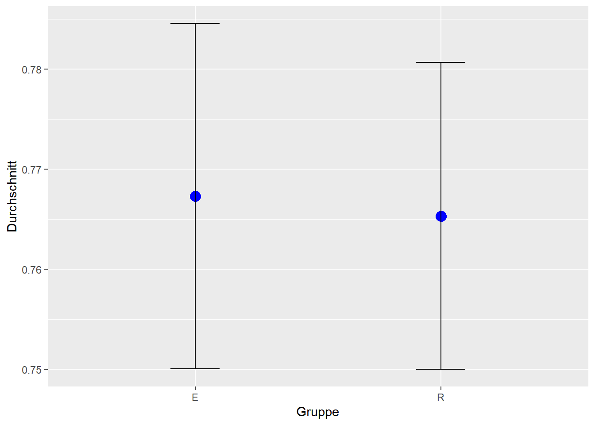
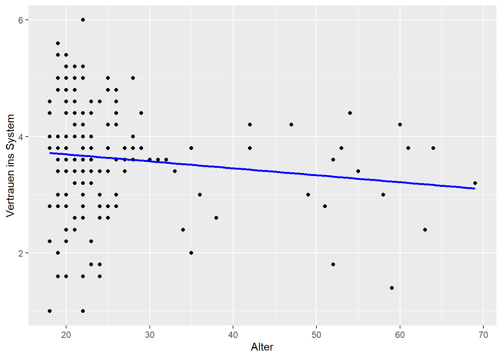

| Variable | N | M | Mdn | Min | Max | SD |
|---|---|---|---|---|---|---|
| Anteil richtiger Antworten evaluative KI | 87 | 10.88 | 12.00 | 1.00 | 23.00 | 7.68 |
| Anteil richtiger Antworten empfehlende KI | 89 | 11.12 | 6.00 | 1.00 | 25.00 | 10.33 |
Künstliche Intelligenz gegen Desinformation - NutzerInnenvertrauen und Modellvergleich
GitHub Repository: https://github.com/linnealund/SMNF-Gruppe-A5
Für die Abgabe aktueller GitHub Hash: SOME_HASH
Code of Conduct
Im Rahmen unserer Zusammenarbeit als Projektgruppe halten wir einen Verhaltenskodex ein, der wie folgt definiert ist:
Umgang mit Feedback und Meinungsverschiedenheiten
Wir begegnen Meinungsverschiedenheiten stets offen und ermutigen kritisches Denken. Jeder soll die Möglichkeit haben Bedenken, Gedanken und Meinungen frei äußern zu dürfen, ohne dafür diskriminiert zu werden. Dabei legen wir Wert auf konstruktives Feedback.
Faire Aufteilung der Arbeitslast
Die Einzelnen Aufgaben werden gleichmäßig verteilt, so dass jeder ähnlich viel machen muss. Dabei achten wir auf Stärken und Schwächen jedes einzelnen und gehen bei der Verteilung auf diese ein.
Verhalten in Bezug auf vereinbarte und verpflichtende Termine
Jeder hat die Verantwortung vereinbarte Termine wahrzunehmen. Sollte es aus Gründen dazu kommen, dass besagter Termin nicht wahrgenommen werden kann, so muss rechtzeitig Bescheid gegeben werden. So kann den anderen Mitgliedern eine Umplanung ermöglicht werden.
Wissenschaftliche Integrität
Wir halten uns an die Grundsätze guten wissenschaftlichen Arbeitens. Dazu gehören Ehrlichkeit, Genauigkeit, Objektivität sowie der verantwortungsvolle Umgang mit Daten und Quellen. Plagiate, Datenmanipulation oder das bewusste Verschweigen von Quellen widersprechen somit unseren Werten.
Datenschutz und Vertraulichkeit
Personenbezogene Daten und vertrauliche Informationen behandeln wir mit Sorgfalt und Diskretion. Dabei halten wir uns an die geltenden Datenschutzgesetze.
Umgang mit KI-Werkzeugen
Der Einsatz von KI-Tools, wie z.B. ChatGPT erfolgt transparent und verantwortungsvoll. Beiträge, die unter Nutzung solcher Hilfsmittel entstanden sind, werden eindeutig gekennzeichnet und auf Korrektheit geprüft.
Einleitung
Desinformation stellt ein zentrales gesellschaftliches Problem unserer Zeit da (Lewandowsky et al., 2017). Falsche oder irreführende Informationen verbreiten sich rasant über soziale Netzwerke und beeinflussen die Meinungsbildung, politische Entscheidungsprozesse oder auch das gesellschaftliche Zusammenleben.
Vor diesem Hintergrund stellt sich die Frage, wie man Desinformationen effektiv entgegenwirken kann.
Traditionelle manuelle Fact-Checking-Prozesse stoßen angesichts der Menge und Geschwindigkeit der verbreiteten Informationen an ihre Grenzen. Hierzu rückt der Einsatz Künstlicher Intelligenz (KI) immer stärker in den Fokus. KI-Systeme können große Datenmengen automatisiert analysieren und effizient bewerten. Bereits heute werden solche Systeme in verschiedenen Bereichen eingesetzt, etwa in sozialen Netzwerken oder auf Nachrichtenplattformen. Hier sollen sie dabei helfen, den Wahrheitsgehalt von Informationen zuverlässig, schnell und in großem Umfang zu überprüfen.
Die Motivation dieser Arbeit liegt darin, das Potenzial von KI als Werkzeug zur Bekämpfung von Fake-News zu untersuchen und dabei insbesondere aus der Perspektive der NutzerInnen vorzugehen.
Denn hierbei spielt besonders das Vertrauen der NutzerInnen in diese KI-Systeme eine entscheidende Rolle für deren Wirksamkeit und Akzeptanz (Logg et al., 2019). Nur wenn die NutzerInnen den Bewertungen der KI vertrauen, können diese KI-Systeme auch ihr volles Potenzial entfalten.
Ziel dieser Arbeit ist es daher, zu untersuchen, welche Bedingungen erfüllt sein müssen, damit KI gestützte Systeme effektiv und verantwortungsvoll im Kampf gegen Desinformation eingesetzt werden können.
Im Zentrum steht daher die folgende Forschungsfrage:
Welche Faktoren haben einen Einfluss bei der Nutzung von KI-Modellen als Tool zur Evaluation von Fake-News, insbesondere bezogen auf die Faktoren Funktionsart des Modells und Alter der NutzerInnen?
Zum einen nehmen wir die Perspektive der NutzerInnen ein, um zentrale Anforderungen, Erwartungen und Herausforderungen im Umgang mit KI gestützten Bewertungssystemen herauszuarbeiten. Hierdurch lassen sich zentrale Kernpunkte identifizieren, die für eine erfolgreiche und akzeptierte Integration solcher Systeme entscheidend sind.
Zum anderen werden spezifische Faktoren wie die Funktionsweise der KI-Modelle, sowie das Alter der NutzerInnen betrachtet. Anhand von Daten sollen auf dieser Basis konkrete Aussagen darüber getroffen werden, wie sich diese Merkmale auswirken.
Literaturübersicht
Im digitalen Zeitalter häufen sich Risiken in Bezug auf gesellschaftliches Vertrauen und Desinformationen in den Sozialen Medien (Kumar & Taylor, 2024). Die erste Studie, die wir für unsere Forschungsfrage heranziehen, kombiniert Ergebnisse aus einer Reihe von Studien von 2014 bis 2024, die sich mit der Thematik der Aufdeckung von Desinformationen beschäftigen. Hieraus entwickelt die Studie, inwiefern sich KI auf eine Abschwächung dieses Problems positiv auswirken kann und welche Entwicklungen im beobachteten Zeitraum in diesem Bereich stattgefunden haben (Kumar & Taylor, 2024).
Diese Studie hilft uns dabei eine gute Grundlage für die Thematik zu bilden und die aktuelle Entwicklung zu visualisieren.
Der Artikel “Blockchain for Social Good: Combating Misinformation on the Web with AI and Blockchain” (Seneviratne, 2022) behandelt die Problematik, dass KI sowohl zur Verbreitung von Desinformation beiträgt (z.B. durch Deepfakes), als auch zu deren Bekämpfung eingesetzt werden kann (z.B. durch Erkennungssysteme). Mithilfe von Kombination mit der Blockchain-Technologie ist es möglich Inhalte besser zu prüfen und Desinformationen einzudämmen. Damit wird die doppelte Rolle der KI als Quelle und Werkzeug im Kampf gegen Desinformationen verdeutlicht (Seneviratne, 2022).
Wir ersehen es als wichtig, die Rolle von KI kritisch zu betrachten, auch die negative Nutzung zu erwägen und resultierend Lösungsansätze auszuarbeiten.
Unser letzter Artikel beschäftigt sich mit dem Problem, dass Falschinformationen in verschiedenen Modalitäten verbreitet werden (z.B. auch visuell, auditiv, etc.) und aktuelle KI-Modelle nach jetzigem Stande nicht ausreichend in der Lage sind multimodale Desinformationen zu verarbeiten. Insbesondere das Unterstreichen von falschen Informationen mit echten Bildern ohne Zusammenhang, stellt hierbei ein Problem dar. Hierfür wurde ein Machine-Learning Modell entwickelt, welches lernt mehrere Modalitäten zu analysieren und Desinformationen zu erkennen (Saeidnia et al., 2025). Diese Studie weist auf mögliche, zukünftige Entwicklungsaspekte im Bereich der KI hin.
Im Hinblick auf unsere Forschungsfrage ziehen wir aus diesen Arbeiten drei zentrale Variablen, die wir in unserer Untersuchung vertiefen möchten: der Anteil der richtigen Antworten abhängig vom genutzten KI-Modell, das Alter der ProbandInnen, sowie das das Vertrauen der NutzerInnen in KI-basierte Systeme. Somit werden sowohl technologische als auch menschliche Faktoren im Umgang mit KI beleuchtet.
Nach dieser Literaturrecherche kann gesagt werden, dass der Einsatz von KI zur Bekämpfung von Desinformationen großes Potential birgt, zugleich aber auch mit Herausforderungen und offenen Fragen verbunden ist. Die bisherigen Studien machen deutlich, dass technische Fortschritte allein nicht ausreichen. Entscheidend ist, wie NutzerInnen mit den Systemen interagieren, wie transparent deren Funktionsweise wahrgenommen wird und in welchem Maß Vertrauen aufgebaut werden kann. Daraus leitet sich die Notwendigkeit ab, die Rolle der NutzerInnen stärker in den Mittelpunkt zu rücken und sowohl technische als auch soziale Dimensionen systematisch zu erfassen.
Methode
Qualitative Methode
Zur Beantwortung unserer Forschungsfrage haben wir uns für eine qualitative Methode entschieden, weil wir genauer verstehen wollten, wie Menschen über den Einsatz von KI gegen Desinformationen denken. Besonders wichtig war uns, persönliche Meinungen, Erfahrungen und Einschätzungen zu hören. Gerade bei einem Thema wie KI, das viele Fragen aufwirft und sehr unterschiedlich wahrgenommen wird, hilft dieser Ansatz dabei die Perspektiven möglicher Nutzer besser nachzuvollziehen.
Wir haben gezielt zwei Personen aus unserem näheren Umfeld befragt, die sich in einem unterschiedlichen Ausmaß mit dem Thema beschäftigen. Eine Person hatte persönliche Berührungspunkte mit KI im Alltag, während die andere sich intensiver im akademischen Kontext mit Fragen rund um KI und Desinformationen auseinandersetzt.
Die Interviews wurden leitfadengestützt durchgeführt und gleichzeitig mit dem Smartphone aufgezeichnet. Die Aufnahmen wurden mithilfe der Open-Source-Transkriptionssoftware Whisper transkribiert und anschließend gelöscht. Ebenso wurden die Interviewten anonymisiert.
Die Analyse erfolgte mittels thematischer Analyse der Transkripte. Wir haben die Auswertung gemeinsam und synchron durchgeführt, um eine einheitliche Interpretation der Inhalte zu gewährleisten. Auf eine spezielle Analyse-Software wurde dabei verzichtet, da der Umfang der Daten das manuelle Arbeiten ermöglichte.
Quantitative Methode

Für die Durchführung unserer Studie (Abbildung 1) wurden zumal die ProbandInnen rekrutiert. Die TeilnehmerInnen mussten über 18 Jahre alt sein und durften derzeit nicht an dem Modul SMNF an der Universität Lübeck teilnehmen. Auch sollten sie aus verschiedenen Altersbereichen stammen. Dies stellte sicher, dass die TeilnehmerInnen aus verschiedenen Bereichen und ohne spezifische Vorerfahrung aus dem Modul, unterschiedliche Einblicke in die Studie einbringen.
Die Erhebung fand vom 24.05.2025 bis zum 02.06.2025 in Form einer Online-Umfrage statt. Durchgeführt wurde diese an einem Rechner oder Tablet.
Es führten insgesamt 176 TeilnehmerInnen die Studie durch. Dabei lag das Alter bei 18 bis 69 Jahren mit einem Durchschnittsalter von 25.9 Jahren und einem Median von 22 Jahren.
Zur Untersuchung von möglichen Unterschieden zwischen evaluativer und empfehlender KI, besonders in Bezug auf Variablen wie Workload, Genauigkeit, Vertrauen und weitere, wurde ein gemischt faktorielles Design gewählt. Dieses setzt sich aus einer Within-Subjects-Faktorstufe und einer Between-Subjects-Faktorstufe zusammen.
Die TeilnehmerInnen bewerten im Rahmen eines Within-Subjects-Designs zunächst Nachrichten ohne und anschließend mit Unterstützung durch ein KI-System.
Zusätzlich wurde im Sinne eines Between-Subjects-Designs variiert, welche Art von KI zum Einsatz kam, entweder ein evaluatives Modell oder ein empfehlendes Modell. Die TeilnehmerInnen wurden hierfür zufällig einer der beiden KI-Varianten zugeteilt, sodass sich jeweils etwa die Hälfte der Antworten auf eine der beiden Versionen bezieht.
Der Ablauf unserer Studie (Abbildung 1) sah zu Beginn das Ausfüllen einer Datenschutzerklärung vor. Hier wurde sichergestellt, dass die TeilnehmerInnen über die Handhabung ihrer persönlichen Daten informiert wurden und sie über die Datenschutzrichtlinien aufgeklärt wurden.
Darauf folgt ein Pre-Test-Fragebogen, welcher die grundlegenden Merkmale unserer ProbandInnen erhob, wie zum Beispiel das Alter. Durch diese Merkmale beziehungsweise Variablen ließen sich die Daten einordnen und analysieren. Ein kleines Tutorial führte anschließend in die kommenden Aufgaben ein.
Im nächsten Ablaufschritt begannen die TeilnehmerInnen mit den Experimenten. Hier wurden sie dazu aufgefordert zehn Posts ohne die Hilfe von KI als Desinformation oder korrekte Information zu klassifizieren. Nach der Bewertung dieser Posts folgte ein Post-Baseline-Fragebogen, um die Empfindungen der Arbeitsbelastung der zuvor ausgeführten Aufgabe festzustellen.
Anschließend begann das nächste Experiment, wo nicht wie zuvor nur die ProbandInnen über die Bewertung der Posts entschieden, sondern auch KI eingebunden wurde. Eingeteilt wurden die ProbandInnen zufällig zu einer von zwei Experiment-Versionen. Die erste beinhaltete eine evaluierende KI und die zweite eine empfehlende KI. Hier durchliefen sie wie zuvor zehn Posts und wurden aufgefordert diese zu klassifizieren.
Zum Abschluss der Studie füllten sie einen finalen Post-Test-Fragebogen aus, wurden verabschiedet und erhielten eine kurze Danksagung für ihre Teilnahme.
Zur Erhebung der gesammelten Daten wurden verschiedene Fragebögen genutzt. Bevor das eigentliche Experiment anfing, wurden die ProbandInnen über verschiedene demographische Daten gefragt, welche verschiedene Skalen nutzen (bspw. eine nominale Skala für die Geschlechtsangabe und ordinale Skalen für die Abschlüsse der ProbandInnen). Als zweiter Teil des Pre-Test-Fragebogen wurden den ProbandInnen Fragen zu ihrer interaktionsbezogenen Technikaffinität gestellt, welche eine metrische Skala nutzen (Franke et al., 2019).
Während des Experimentes mussten die ProbandInnen nun eine mögliche Desinformation identifizieren (Ja oder nein) und das System speicherte die Korrektheit der Entscheidung (Richtig oder falsch) mithilfe einer binären Skala. Außerdem wurden die Reaktionszeit und Trefferquote des zweiten Tasks in einer metrischen Skala gemessen.
Nach dem Baseline-Experiment (ohne KI-Unterstützung) sowie nach dem Durchlauf mit KI-Unterstützung werden die ProbandInnen nach ihrer Beanspruchung in verschiedenen Bereichen gefragt. Dies wird im Rahmen einer metrischen Skala gespeichert (Grippenkoven et al., 2018). Zusätzlich wird nach dem zweiten Durchlauf auch mithilfe einer metrischen Skala abgefragt, wie viel die ProbandInnen über die Informationsverarbeitung des Systems wissen und wie sie es einschätzen können (Schrills & Franke, 2021).
Als nächstes wird abgefragt, wie vertrauensvoll und verlässlich die KI bzw. das System wahrgenommen wird (Madsen & Gregor, 2000). Zusätzlich werden allgemeine Fragen zur Wahrnehmung des Systems gestellt (Laugwitz et al., 2008). Beide Fragebögen nutzen die metrische Skala.
Und zuletzt sollten die ProbandInnen die allgemeine Gebrauchstauglichkeit des Systems mithilfe einer metrischen System Usability Scale (Gao et al., 2020) bewerten.
Die Analyse der Daten erfolgt bei dieser Studie anhand von t-Tests und Korrelation. Der t-Test überprüft, ob es einen signifikanten Unterschied zwischen den Mittelwerten von zwei Gruppen gibt. Dies bietet sich besonders zwischen den Variablen „Systemtyp“, also die Nutzung von einer der beiden KI-Versionen und der Variable „Korrektheit“. Wir untersuchen also, wie die Korrektheit der Einschätzung der ProbandInnen von der Nutzung eines KI-Modells anhängig ist.
Mit der Korrelation lässt sich die lineare Beziehung zwischen zwei Variablen ermitteln. Für diese analysieren wir die Werte der unabhängigen Variable „Alter“ in Bezug zu der abhängigen Variable „Perceived Reliability“, welche das Vertrauen in KI repräsentiert (Madsen & Gregor, 2000). Hiermit untersuchen wir, ob das Vertrauen in KI sich abhängig vom Alter unterscheidet.
Ergebnisse
Qualitative Ergebnisse
| Name | Definition | Textstelle |
|---|---|---|
| [T1] KI-Skepsis | Viele NutzerInnen vertrauen KI nur bedingt, da sie auch fehlerhaft ist und NutzerInnen die Funktionweise schwer nachvolziehen können. | “Denn nicht jede Person glaubt, was die KI sagt, weil die KI auch Missinformationen verbreiten kann. […] Deswegen bin ich manchmal ein bisschen skeptisch, was die KI auch selbst von sich gibt.” (A5_1, Zeile 107-110) |
| [T2] Vereinfachte Darstellung | Um den Überblick behalten zu können, sollten die Antworten der KI in Stichpunkten oder kurzen Absätzen passieren. | “Dass man einen Überblick hat über die Informationen, die man da gerade kriegt.” (A5_2, Zeile 168-169) |
| [T3] Kontrolle über die Nutzung | Die NutzerInnen sollen selbst entscheiden können, wann und in welchen Umfang sie die KI nutzen. | “Ich bin eher dafür, die Möglichkeit zu haben, es an- und auszuschalten, da ich der Meinung bin, dass jeder seine eigenen Präferenzen hat und es auch Leute gibt, die nicht KI nutzen möchten […].” (A5_1, Zeile 223-225) |
Für die Interviews haben wir insgesamt zwei NutzerInnen befragt und die Interviews dann mithilfe der Thematischen Analyse nach Braun & Clarke (2006) analysiert. Dabei haben wir darauf geachtet, Personen mit unterschiedlichen Perspektiven und Vorkenntnissen auszuwählen. Eine Person hat sich selbst bereits mit diesem Thema im akademischen Kontext befasst und die andere Person nutzt KI manchmal in ihrem Alltag, hat des Weiteren aber keine spezifischen Kenntnisse. Aus den Interviwes haben sich folgende Kernthemen ergeben (Tabelle 1).
Beide Probanden haben Bedenken zur Glaubwürdigkeit der Aussagen der KI (Tabelle 1, T1) geäußert, besonders wenn es um Belegung der Aussagen durch entsprechende Quellen geht.
Dies ist das Resultat aus vorherigen Erfahrungen mit KI. In diesen Fällen gab ihnen KI falsche Antworten und verbreitete somit selbst Desinformationen: „Da kann es aber nämlich auch passieren, dass es dann vielleicht auch falsche Quellen mit reinnimmt. Und dass dadurch dann auch die Antwort verfälscht wird.“ (A5_2, Zeile 62-64) Daraus folgt also die Skepsis zur weiteren Nutzung von KI.
Als Lösungsansatz nannte eine Person A5_1 eine hohe Transparenz der KI: „Man muss wissen, woher die KI ihre Quellen hat, ihre Belege, ihre Beispiele oder auch aus welchen Quellen ihre Aussage kommt. Das ist auf jeden Fall sehr wichtig, damit die Richtigkeit der Aussagen wirklich belegt werden kann.“ (A5_1, Zeile 118-122)
In beiden Interviews wurde die Wichtigkeit, einen guten Überblick (Tabelle 1, T2) behalten zu können, hervorgehoben. Die Antworten der KI sollen möglichst kurz und präzise in Textformat dargestellt werden, beispielsweise in Stichpunkten oder auch kurzen Absätzen. „[…] wenn es ein langer Paragraf ist, dann bitte mit vorgehobenen Wörtern, weil es sich einfach einfacher beim Lesen macht und ich bevorzuge einfach Stichpunkte.“ (A5_1, Zeile 244-246) So gewährleistet man, dass die NutzerInnen die Informationsmenge gut verarbeiten können und das Interagieren mit der KI als angenehm empfunden wird.
Unsere ProbandInnen betonen zudem, dass die NutzerInnen selbst entscheiden können sollen, wann und wie sie die KI nutzen wollen (Tabelle 1, T3). Die persönlichen Präferenzen sind unterschiedlich und es ist wichtig, diese im Rahmen der KI zu beachten. Eine Person betont hier aber auch den Gegenfall, wenn die KI eben nicht immer automatisch aktiviert ist: „ […] aber würde man ja auch die Missinformation halt sehen und vielleicht auch denken, dass es wahr ist und das glauben.“ (A5_2, Zeile 153-155)
Quantitative Ergebnisse
Stichprobe
Für unsere Studie zum Thema KI als Hilfsmittel zur Detektion von Misinformationen haben wir die Daten von diversen ProbandInnen (N = 176) gesammelt. Davon waren insgesamt 84 ProbandInnen männlich und 90 weiblich. Des Weiteren beinhaltet die Studie eine diverse und eine non-binary teilnehmende Person.
Ebenso können die ProbandInnen anhand ihres Alters differenziert werden. Hierbei ergab sich eine Altersspanne von 18 (Mindestalter zur Teilnahme an der Studie) bis 69 Jahren. Aus diesen Daten (Tabelle 3) folgt ein Durchschnittsalter von M = 25.9 Jahren mit einer Standardabweichung von SD = 10.6 Jahren. Darüber hinaus liegt der Median bei Mdn = 22 Jahren.
Bei der Auswertung unserer gesammelten Daten haben wir uns mit der Abhängigkeit von Alter und Vertrauen in KI beschäftigt. Vor diesem Hintergrund haben wir unseren Fokus nicht auf das Geschlecht, sondern primär auf das Alter der ProbandInnen gelegt und somit die gesamte Altersspanne betrachtet.
Die Generalisierbarkeit können wir, da wir uns größtenteils auf die Eigenschaft Alter fokussieren, auch nur für den Bereich einschätzen. Wir vermuten, dass unsere Studie generalisiert werden kann, da unsere Altersspanne so weit ist.
Deskriptive Statistik
| Variable | N | M | Mdn | Min | Max | SD |
|---|---|---|---|---|---|---|
| Alter | 176 | 25.94 | 22.00 | 18.00 | 69.00 | 10.63 |
| Vertrauen ins System | 176 | 3.62 | 3.70 | 1.00 | 6.00 | 0.96 |
Für unsere Studie haben wir mehrere Variablen benutzt, um unsere Forschungsfragen beantworten zu können. Diese sind “Korrektheit/Ergebnis” und “Systemtyp” im Zusammenhang miteinander, außerdem “Alter” im Zusammenhang zu “Vertrauen ins System”.
Die Variable “Systemtyp” umfasst zwei verschiedene KI-Modelle (Tabelle 2). Diese sind evaluativ (E) und empfehlend (R). Der Mittelwert liegt beim evaluativen Modell M = 0.765 und beim empfehlenden Modell bei M = 0.767.
Die metrische Variable “Alter” (Tabelle 3) umfasst das Alter aller ProbandInnen in Jahren. Die Daten (wie oberhalb beschrieben) weisen auf eine jüngere, aber dennoch heterogene Stichprobe.
Unsere letzte Variable, die wir betrachtet haben, ist “Vertrauen ins System”(Tabelle 3). Dabei geht es darum wie viel Vertrauen die ProbandInnen in KI-Systeme haben, um Desinformationen im Netzt zu detektieren und auszusortieren.
Inferenzstatistik

Die Analyse erfolgte mittels eines unverbundenen T-Tests. Dabei haben wir untersucht, ob es innerhalb der Variable “Systemtyp” einen Unterschied in der Erfolgsquote bei der Aufdeckung von Desinformationen zwischen dem Evaluativen (E) und dem Empfehlenden (R) KI-System gibt. Dabei haben wir uns die Daten aller 176 ProbandInnen angeschaut.
Aus unseren Daten (Abbildung 2) ergibt sich die folgende Untersuchung: Die Differenz der durchschnittlichen Korrektheit des evaluativen Modells (M = 0.76, SD = 0.16) und des empfehlenden Modells (M = 0.76, SD = 0.14) war nicht signifikant unterschiedlich (t(174) = -0.08, p > .05).

Bei der Korrelationsanalyse haben wir uns, wie zuvor erwähnt, für die Variablen “Alter” in Korrelation zu “Vertrauen ins System” entschieden. Auch hier haben wir uns die Daten aller 176 ProbandInnen angeschaut, um eine möglichst große Altersspanne zu haben. In der Abbildung 3 sieht man die aus der Studie folgenden Werte, welche wir anschließend analysiert haben.
Aus unseren Daten ergibt sich, dass es zwar eine kleine Abnahme an Vertrauen in die KI gibt, je älter die ProbandInnen sind. Jedoch ist der Trend nicht signifikant genug, um einen eindeutigen Zusammenhang zwischen den beiden Variablen zu identifizieren. Es besteht also kein Zusammenhang zwischen dem Alter und dem Vertrauen in die Nutzung von KI (r(174) = -0.132, p = .080). Das bedeutet, dass ein höheres Alter nicht direkt mit einem geringeren Vertrauen in die KI einhergeht.
Diskussion
Beantwortung der Forschungsfrage
Die zentrale Forschungsfrage dieser Untersuchung lautete, ob sich der Anteil richtiger Antworten beim Erkennen von Desinformation in Abhängigkeit vom verwendeten KI-Modell unterscheidet und ob das Vertrauen in das jeweilige System mit dem Alter der NutzerInnen zusammenhängt. Die Ergebnisse des durchgeführten t-Tests zeigten keinen signifikanten Unterschied im Antwortverhalten zwischen den verschiedenen KI-Modellen. Daraus lässt sich schließen, dass die Art des eingesetzten Modells keinen entscheidenden Einfluss auf die Leistung der NutzerInnen beim Erkennen korrekter Informationen hatte.
Auch die Korrelationsanalyse zwischen Alter und Vertrauen in das System ergab keinen signifikanten Zusammenhang. Das Vertrauen der NutzerInnen in die jeweilige KI war somit unabhängig vom Alter, wie unsere Nullhypothese aussagt. Die Forschungsfragen können also dahingehend beantwortet werden, dass weder das Modell selbst noch das Alter der ProbandInnen einen messbaren Einfluss auf Vertrauen oder Bewertungskompetenz zeigten.
Implikationen für Wissenschaft und Gesellschaft
Aus wissenschaftlicher Perspektive leisten die Ergebnisse einen Beitrag zur Diskussion um Wahrnehmung der NutzerInnen algorithmischer Systeme. Die Tatsache, dass kein signifikanter Unterschied zwischen verschiedenen KI-Modellen festgestellt wurde, könnte dafürsprechen, dass NutzerInnen in diesem Kontext nicht modellabhängig interagieren, sondern möglicherweise ein generalisiertes Vertrauen oder Misstrauen gegenüber KI-Systemen entwickeln. Dies steht im Einklang mit bisherigen Arbeiten zur algorithmischen Autorität und Akzeptanz der NutzerInnen (z.B. Yeomans et al., 2019).
Zudem lässt sich aus den Ergebnissen schließen, dass Alter, welches häufig als Einflussfaktor bei Technologieakzeptanz diskutiert wird, in diesem speziellen Fall keine Rolle spielt. Dies widerspricht teilweise der Annahme, dass ältere Personen pauschal weniger Vertrauen in neue Technologien haben. Stattdessen scheint es hier eher auf andere Merkmale anzukommen, welche nicht erfasst wurden.
Gesellschaftlich relevant ist insbesondere die Erkenntnis, dass die reine Implementierung einer KI nicht automatisch zu besserer Desinformationsbewertung oder erhöhtem Vertrauen führt. Die Ergebnisse legen nahe, dass technische Lösungen allein nicht ausreichen. Es braucht begleitende Maßnahmen, etwa durch Medienkompetenzförderung oder gezielte Aufklärung über Funktionsweisen und Grenzen von KI.
Limitationen der Studie
Wie bei jeder empirischen Untersuchung sind die vorliegenden Ergebnisse unter Berücksichtigung einiger Limitationen zu interpretieren. Die Altersverteilung innerhalb der Stichprobe war enger gefasst, wodurch insbesondere ältere Altersgruppen unterrepräsentiert waren. Dies erschwert generalisierbare Aussagen darüber, inwiefern Vertrauen in KI altersabhängig ausgeprägt ist.
Ein weiterer kritischer Punkt betrifft die Verwendung eines hypothetischen Szenarios zur Bewertung von Desinformation. Obwohl dieses methodisch eine kontrollierte Vergleichbarkeit ermöglichte, spiegelt es reale Nutzungssituationen, wie etwa im Alltag oder auf sozialen Medien, nur bedingt wider. Faktoren wie Zeitdruck, Ablenkung oder soziale Kontexte, die typischerweise Einfluss auf Informationsverarbeitung und Entscheidungsverhalten nehmen, konnten nicht abgebildet werden.
Zudem wurde in der Untersuchung keine echte KI implementiert, sondern eine simulierte Darstellung verschiedener KI-Modelle eingesetzt. Diese Entscheidung erhöhte die Standardisierbarkeit, könnte jedoch zu Verzerrungen in der Wahrnehmung der NutzerInnen geführt haben.
Darüber hinaus wurde nur ein bestimmter Typ von Desinformation behandelt. In anderen Themenbereichen könnten NutzerInnen deutlich anders reagieren.
Zukünftige Forschung
Vor dem Hintergrund dieser Implikationen und Limitationen ergeben sich mehrere Ansatzpunkte für Folgestudien. Zunächst wäre eine differenziertere Analyse weiterer demographischer Variablen, wie Technikvertrauen oder politisches Interesse denkbar.
Auch naheliegend sind Feldstudien in einem realen Nutzungskontext. Solche Untersuchungen könnten erfassen, wie NutzerInnen auf tatsächliches Feedback reagieren und ob sich unter realistischen Bedingungen andere Muster im Vertrauen- und Antwortverhalten zeigen, was die externe Validität erhöhen würde.
Eine weiter Möglichkeit wäre die Durchführung von Langzeitstudien, um mögliche Gewöhnungseffekte zu erfassen. Denn Vertrauen in technologische Systeme, insbesondere in KI kann sich durch wiederholte Nutzung, sowie positive und negative Erfahrungen entwickeln, was durch punktuelle Erhebungen nicht erfassbar ist.
Abschließend kann die Nutzung adaptiver Systeme einen weiteren Forschungsansatz darstellen. So könnte etwa zwischen NutzerInnen mit hohem Grundvertrauen und solchen mit skeptischer Haltung differenziert werden, beispielsweise durch unterschiedliches Feedback oder unterschiedliche Transparenzlevel und Interaktionsstile.
Insgesamt zeigt sich, dass die Integration menschzentrierter und kontextsensitiver Perspektiven entscheiden ist, um das Zusammenspiel zwischen NutzerInnen und System langfristig besser zu verstehen und gezielt zu gestalten.
Literaturverzeichnis
Braun, V., & Clarke, V. (2006). Using Thematic Analysis in Psychology. Qualitative Research in Psychology, 3(2), 77–101. https://doi.org/10.1191/1478088706qp063oa
Franke, T., Attig, C., & Wessel, D. (2019). A Personal Resource for Technology Interaction: Development and Validation of the Affinity for Technology Interaction (ATI) Scale. International Journal of Human-Computer Interaction, 35(6), 456–467. https://doi.org/10.1080/10447318.2018.1456150
Gao, M., Kortum, P., & Oswald, F. (2020). Multi-Language Toolkit for the System Usability Scale. International Journal of Human-Computer Interaction, 36, 1–19. https://doi.org/10.1080/10447318.2020.1801173
Grippenkoven, J., Rodd, J., & Brandenburger, N. (2018). DLR-Wat: Ein Instrument zur Untersuchung des Optimalen Beanspruchungsniveaus in Hochautomatisierten Mensch-Maschine-Systemen.
Kumar, A., & Taylor, J. W. (2024). Feature Importance in the Age of Explainable AI: Case Study of Detecting Fake News & Misinformation via a Multi-Modal Framework. European Journal of Operational Research, 317(2), 401–413. https://doi.org/10.1016/j.ejor.2023.10.003
Laugwitz, B., Held, T., & Schrepp, M. (2008). Construction and Evaluation of a User Experience Questionnaire (Bd. 5298). https://doi.org/10.1007/978-3-540-89350-9_6
Lewandowsky, S., Ecker, U. K. H., & Cook, J. (2017). Beyond Misinformation: Understanding and Coping with the „Post-Truth“ Era. Journal of Applied Research in Memory and Cognition, 6(4), 353–369. https://doi.org/10.1016/j.jarmac.2017.07.008
Logg, J. M., Minson, J. A., & Moore, D. A. (2019). Algorithm Appreciation: People Prefer Algorithmic to Human Judgment. Organizational Behavior and Human Decision Processes, 151, 90–103. https://doi.org/10.1016/j.obhdp.2018.12.005
Madsen, M., & Gregor, S. (2000). Measuring Human-Computer Trust. https://www.semanticscholar.org/paper/Measuring-Human-Computer-Trust-Madsen-Gregor/b8eda9593fbcb63b7ced1866853d9622737533a2
Saeidnia, H. R., Hosseini, E., Lund, B., Tehrani, M. A., Zaker, S., & Molaei, S. (2025). Artificial Intelligence in the Battle against Disinformation and Misinformation: A Systematic Review of Challenges and Approaches. Knowledge and Information Systems, 67(4), 3139–3158. https://doi.org/10.1007/s10115-024-02337-7
Schrills, T., & Franke, T. (2021). Subjective Information Processing Awareness Scale (SIPAS).
Seneviratne, O. (2022). Blockchain for Social Good: Combating Misinformation on the Web with AI and Blockchain. 14th ACM Web Science Conference 2022, 435–442. https://doi.org/10.1145/3501247.3539016
Anhang 1 - Rekrutierungstext
TeilnehmerInnen für KI-Studie gesucht!
Für unsere Studie zum Thema KI-Unterstützungssysteme als Hilfsmittel zur Erkennung von Falschinformationen suchen wir ProbandInnen. Dabei untersuchen wir den Umgang mit solchen KI-Unterstützungssysteme
Einschlusskriterien sind:
Du bist mindestens 18 Jahre alt
Du nimmst derzeit nicht am Modul Statistik und Methoden der Nutzenden-Forschung an der Uni Lübeck teil
Du hast einen Laptop/PC oder Tablet, an dem du die online Studie ausfüllen kannst
Die Teilnahme dauert ca. 45-60 Minuten und erfolgt online. Alle Daten werden anonym behandelt.
Interesse geweckt? Dann nimm jetzt über folgenden Link teil: https://dsslab.hciuse.sh/study/pilot?groupId=gr-a5
Vielen Dank für deine Unterstützung!
Linnea, Sophie, Mel, Lina und Eric